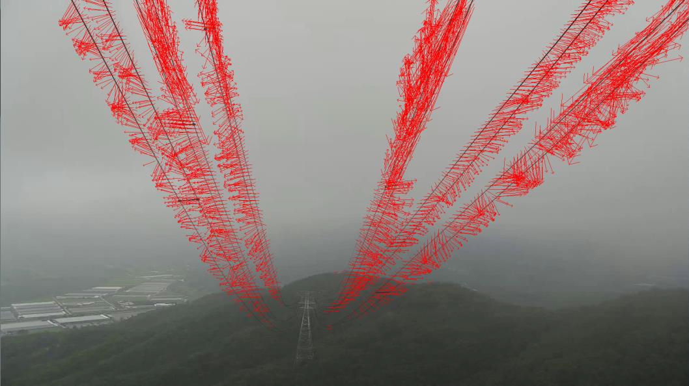
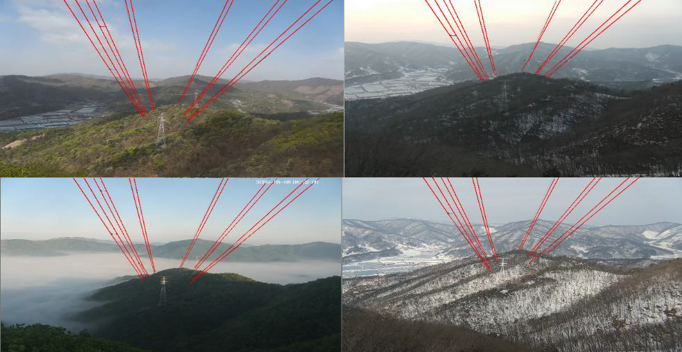

Power Line Galloping Detection System
Video monitoring · Oscillation detection · Real-time alerts · Grid stability
Overview
Video-based monitoring system for detecting abnormal oscillations (galloping) in power transmission lines. Real-time detection and alert system helps prevent power line failures and improve grid stability.
Problem
- Power line galloping can cause outages and equipment damage.
- Manual monitoring impractical for large transmission networks.
- Need for early detection to enable preventive maintenance.
- Challenging outdoor conditions (wind, weather, distance).
Solution
- Video-based detection using motion/time-series analysis.
- Integrated alert mechanisms for real-time monitoring.
- Robust to environmental variations and camera positioning.
- Automated detection reduces need for manual inspection.
My Role
- Built detection using motion/time-series analysis.
- Integrated alert mechanisms for real-time monitoring.
- Validated system under various environmental conditions.
Implementation
Language: Python
Libraries:
OpenCV
PyTorch
NumPy
Results Gallery


End Result
- Reliable real-time detection of galloping events.
- Improved grid stability via proactive maintenance decisions.
- Reduced equipment damage and outage incidents.